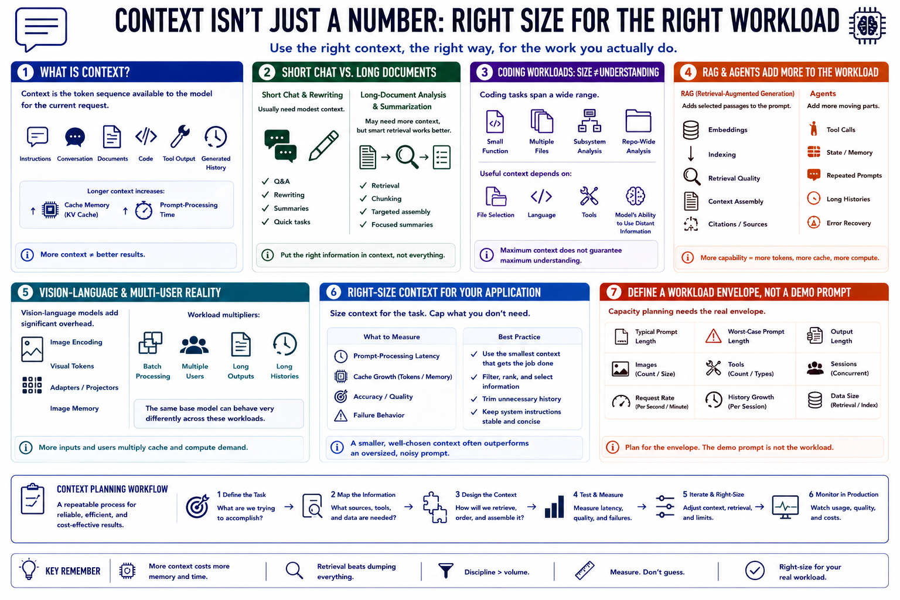

Context Window and Workload Type
Connecting to LMS... Progress: in progress

Narration
Context is the token sequence available to the model for the current request. It includes instructions, conversation, documents, code, tool output, and generated history. Longer context increases cache memory and prompt-processing time.
Short chat and rewriting usually need modest context. Long-document analysis and summarization may need more, but retrieval or chunking can be more reliable than placing an entire archive into one prompt.
Coding workloads vary from a small function to repository-wide analysis. Useful context depends on file selection, language, tools, and the model's ability to use distant information. Maximum context does not guarantee maximum understanding.
Retrieval-augmented generation adds selected source passages to a prompt. Its workload includes embeddings, indexing, retrieval quality, context assembly, and citations. Agents add tool calls, state, repeated prompts, and potentially long histories.
Vision-language models add image encoding, visual tokens, adapters, and image-memory requirements. Batch processing and multiple users multiply cache and compute demand. The same base model can behave very differently across these workloads.
Size context for the actual application and cap unnecessary history. Measure prompt-processing latency, cache growth, accuracy, and failure behavior. A smaller context used with disciplined information selection often outperforms an oversized noisy prompt.
Define a workload envelope with typical and worst-case prompt length, output length, images, tools, sessions, and request rate. Capacity planning needs that envelope, not one carefully chosen demonstration prompt.